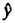

| Previous | Table of Contents | Next |
If a few of the ab observations are missing in a design without replications, the methodology presented here can still be used. That is, the effects can be computed from the row (column) means and overall mean. Of course, the means should be obtained by dividing the sums by the respective number of observations added. The degrees of freedoms of sums of squares should also be adjusted accordingly. Further, the formulas for standard deviations of effects should be adjusted to reflect the number of observations present in the column or row.
Several other statistical alternatives have been proposed for missing values, and there is some controversy regarding their usefulness. One method, called the replacement method, requires that the missing value be replaced by an estimate  such that the residual for the missing experiment is zero. Another method, called the minimum residual variance method, requires that a symbol y be placed in the missing value cell and the SSE be written as a function of y. The value of y that minimizes the SSE is the desired missing value. The problem is that these two methods will result in different estimates of SSA and SSB and the conclusions using the two methods may be different.
| TABLE 21.20 Measured Data for the RISC Execution Time Study | ||||||
|---|---|---|---|---|---|---|
| VAX- | PDP- | |||||
| Workload | RISC-I | 68000 | Z8002 | 11/780 | 11/70 | C/70 |
| E-String Search | 0.46 | 1.29 | 0.74 | 0.60 | 0.41 | 1.01 |
| F-Bit Test | 0.06 | 0.29 | 0.43 | 0.29 | 0.37 | 0.55 |
| H-Linked List 0.10 | 0.16 | 0.24 | 0.12 | 0.19 | 0.25 | |
| K-Bit Matrix | 0.43 | 1.72 | 2.24 | 1.29 | 1.72 | 4.00 |
| I-Quick Sort | 50.40 | 206.64 | 262.08 | 151.20 | 181.44 | 292.32 |
| Ackermann(3,6) | 3,200.00 | — | 8,960.00 | 5,120.00 | 5,120.00 | — |
| Recursive Qsort | 800.00 | — | 4,720.00 | 1,840.00 | 2,560.00 | 1,040.00 |
| Puzzle (Subscript) | 4,700.00 | — | 19,740.00 | 9,400.00 | 7,520.00 | 15,980.00 |
| Puzzle (Pointer) | 3,200.00 | 13,440.00 | 7,360.00 | 4,160.00 | 6,400.00 | 6,720.00 |
| SED (Batch Editor) | 5,100.00 | — | 22,440.00 | 5,610.00 | 5,610.00 | 13,260.00 |
| Towers Hanoi (18) | 6,800.00 | — | 28,560.00 | 12,240.00 | 15,640.00 | 10,880.00 |
Adapted with permission from Patterson and Sequin (1982).
| TABLE 21.21 Computation of Effects for the RISC Execution Time Study | |||||||||
|---|---|---|---|---|---|---|---|---|---|
| Workload | RISC-I | 68000 | Z8002 | VAX-11/780 | PDP-11/70 | C/70 | Row Sum | Row Mean | Row Effect |
| E-String Search | -0-34 | 0.11 | -0.13 | -0.22 | -0.38 | 0.01 | -0.96 | -0.16 | -2.16 |
| F-Bit Test | -1.22 | -0.54 | -0.36 | -0.54 | -0.43 | -0.26 | -3.36 | -0.56 | -2.55 |
| H-Linked List | -1.00 | -0.80 | -0.62 | -0.92 | -0.72 | -0.60 | -4.66 | -0.78 | -2.77 |
| K-Bit Matrix | -0.37 | 0.24 | 0.35 | 0.11 | 0.24 | 0.60 | 1.17 | 0.19 | -1.80 |
| I-Quick Sort | 1.70 | 2.32 | 2.42 | 2.18 | 2.26 | 2.47 | 13.34 | 2.22 | 0.23 |
| Ackermann(3,6) | 3.51 | — | 3.95 | 3.71 | 3.71 | — | 14.88 | 3.72 | 1.72 |
| Recursive Qsort | 2.90 | — | 3.67 | 3.26 | 3.41 | 3.02 | 16.27 | 3.25 | 1.26 |
| Puzzle (Subscript) | 3.67 | — | 4.30 | 3.97 | 3.88 | 4.20 | 20.02 | 4.00 | 2.01 |
| Puzzle (Pointer) | 3.51 | 4.13 | 3.87 | 3.62 | 3.81 | 3.83 | 22.75 | 3.79 | 1.80 |
| SED (Batch Editor) | 3.71 | — | 4.35 | 3.75 | 3.75 | 4.12 | 19.68 | 3.94 | 1.94 |
| Towers Hanoi (18) | 3.83 | — | 4.46 | 4.09 | 4.19 | 4.04 | 20.61 | 4.12 | 2.13 |
| Column sum | 19.90 | 5.45 | 26.25 | 23.01 | 23.70 | 21.42 | 119.73 | ||
| Column mean | 1.81 | 0.91 | 2.39 | 2.09 | 2.15 | 2.14 | 2.00 | ||
| Column effect | -0.19 | -1.09 | 0.39 | 0.10 | 0.16 | 0.15 | |||
| Previous | Table of Contents | Next |